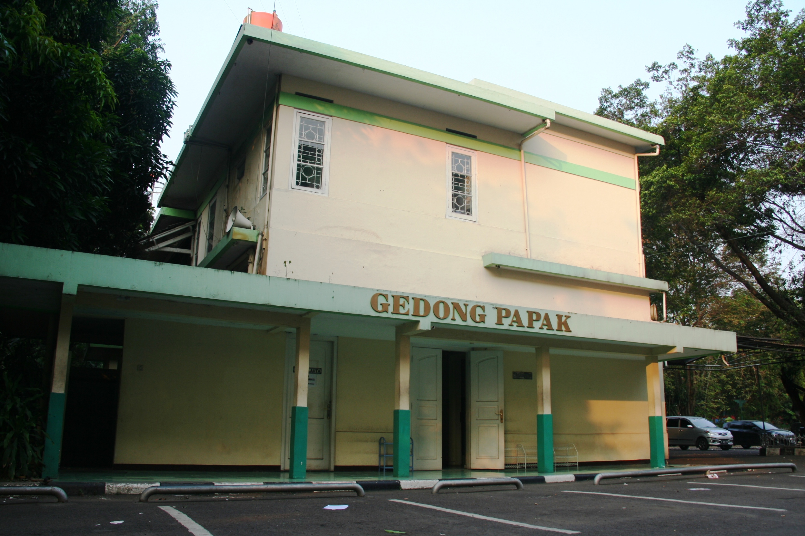
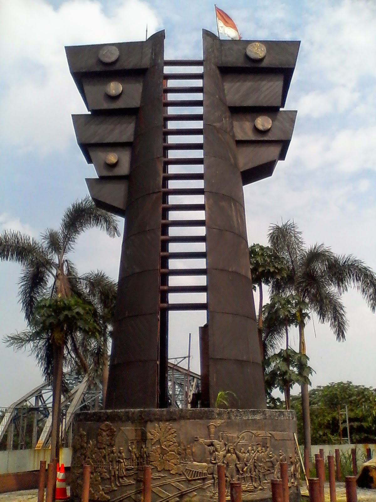
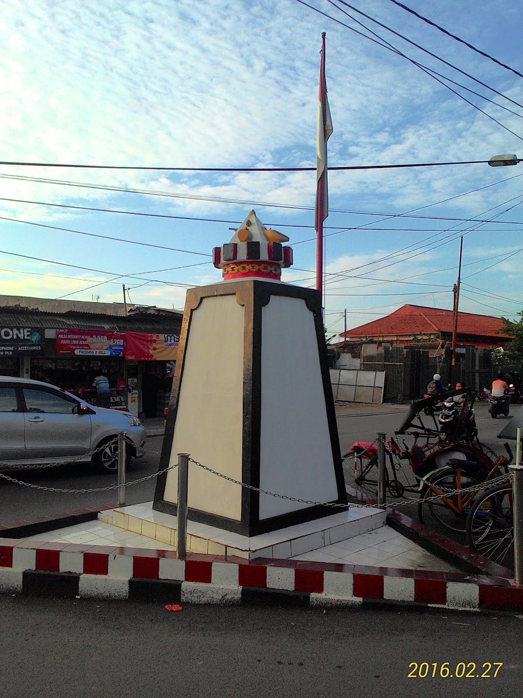

Bekasi masuk ke dalam katagori sebagai daerah yang sering mengalami peristiwa-peristiwa pertempuran. Oleh sebab itu, Bekasi sering disebut sebagai Kota Patriot sebagian besar peristiwa pertempuran tersebut diabadikan dalam
berbagai bentuk peninggalan sejarah. Salah satunya, berbentuk monumen. Berikut beberapa peninggalan sejarah di Bekasi.
Gedung papak

Gedung bersejarah terletak di Jalan H. Juanda Kecamatan Bekasi Timur Kota Bekasi. Gedung ini merupakan salah satu bangunan bersejarah yang turut memberikan kesaksian atas perjuangan rakyat Bekasi pada masa revolusi fisik.
Secara historis, gedung Papak ini dahulu milik seorang keturunan Tionghoa bernama Lee Guan Chin. Dia seorang pengusaha yang memiliki banyak pabrik penggiilingan beras. Namun, yang paling dicatat Guan Chin ternyata memiliki
loyalitas yang tinggi terhadap perjuangan rakyat Bekasi. Juga Guan Chin memiliki hubungan yang baik dengan gerakan kerakyatan pimpinan KH Noer Alie. Bahkan, gedung itu diserahkan secara sukarela sebagai salah satu markas
perjuangan rakyat Bekasi.
Pada masa revolusi fisik, Gedung Papak dijadikan salah satu basis pertahanan di front pertahanan Bekasi-Jakarta (Kamaly 1983). Pertempuran-pertempuran terus berlangsung di sekitar daerah Jakarta Timur hingga Bekasi. Bahkan,
pertempuran yang dahsyat terjadi di Bekasi dan sekitarnya berlangsung antara bulan September 1945 hingga 1949.
Monumen Kali Bekasi

Insiden Kali Bekasi memiliki arti yang sangat dalam bagi rakyat Bekasi, menggambarkan keberanian rakyat Bekasi, sekaligus tragis. Kali Bekasi merupakan garis demarkasi antara tentara sekutu (Inggris dan NICA) yang menduduki
Jakarta dengan laskar-laskar republik yang bertahan di seberang kali dibagian timur.
Akibat pendudukan Jepang yang kejam terhadap rakyat Bekasi. Pemuda dan rakyat Bekasi bertindak sendiri dengan menangkap orang-orang Jepang atau bahkan siapa saja yang diduga telah bekerjasama dengan Jepang. Pemuda dan rakyat
Bekasi menghentikan setiap kereta api yang melintas ke Bekasi baik yang keluar maupun ke Jakarta.
Pada 19 Oktober 1945 meluncur kereta dari Jakarta yang mengangkut tawanan Jepang menuju Ciater, kerata itu pun lolos dari hadangan, setibanya di Cikampek dihentikan oleh para pejuang setempat, dan diperintahkan untuk kembali
ke Jakarta. Ternyata rakyat Bekasi sudah menunggu. Sesampainya di Stasiun Bekasi seluruh gerbong digededah dan ditemukan 90 orang tentara Jepang. Rakyat beringas ketika ditemukan senjata api milik seorang tawanan, kemudian
seluruh tentara Jepang wajib menyerahkan persenjataannya. Disitu juga, seluruh tawanan ditempatkan di Rumah Gadai tepi Kali Bekasi yang dijadikan lokasi penjara sementara. Padahal, awak kereta ketika itu sudah mencegah
penggeledahan terhadap tawanan dengan menunjukan surat perintah jalan dari Menteri Subardjo yang ditandatangani Bung Karno.
Monumen Tugu Agus Salim

Monumen yang terbuat dari batu persegi empat ini terletak di Jalan KH Agus Salim, Bekasi Timur, Kota Bekasi. Pada bagian atasnya memiliki kepala yang disekelilingnya terdapat pecahan peluru meriam, mortir, granat tangan dan
selongsong palum ukuran 12.7 milimeter.
Sekilas keberadaan tugu dengan tinggi secara sekitar 205 centimeter ini hanyalah sebuah tugu batas wilayah biasa. Namun jika di telisik dari sisi sejarah, tugu ini memiliki makna historis yang sangat besar, yang menunjukan
bagaimana perjuangan masyarakat Bekasi pada masa penjajahan melawan para tentara Belanda dan sekutu.
Tidak ada sumber data yang otentik tentang nama persis monumen berupa tugu yang berada di tengah-tengah pertigaan di jalan KH Agus Salim ini. Namun masyarakat sekitar menyebutnya dengan nama tugu pahlawan. Dinamakan demikian
karena pembangunan tugu ini bertujuan untuk mengenang jasa para pahlawan yang berjuang dengan hati di saat massa penjajahan kolonial belanda, hingga pada tragedi berdara Bekasi Lautan Api.
Kota Bekasi sebagai salah satu distrik berkumpulnya para pejuang di daerah Jawa Barat, tidak luput dari tragedi berdarah tersebut, dengan hampir seluruh bagian Kota Bekasi luluh lantak rata dengan tanah kara di bakar dan di
bombardir oleh serangan udara tentara Belanda dan sekutu. Tidak terkecuali di daerah sekitar jalan KH. Agus Salim ini.
Pembakaran Kota Bekasi sendiri di latar belakangi oleh kemarahan seorang panglima tentara sekutu, Jendral Cristison. Dia murka atas penawanan tentara sekutu oleh rakyat Bekasi bersama pejuang RI lainnya di saat pesawat yang di
tumpangi tentara sekutu yang hendak membawa mereka ke Jakarta terjatuh di daerah Rawa Gatal, Cakung.
Masyarakat dan para pejuang Republik Indonesia yang melihat adanya pesawat jatuh di daerah mereka, bergegas menghampiri dan hendak menolong. Namun setelah mengetahui seluruh penumpang pesawat merupakan tentara Belanda,
masyarakat dan pejuang memutuskan untuk menahan nya.
Tidak lama setelah penawanan tentara sekutu yang di lakukan oleh rakyat Bekasi dan pejuang RI, Jenderal Cristison mengeluarkan ultimatum agar tentara yang di tawan segera di bebaskan, jika tidak maka dia mengancam akan membumi
hanguskan Bekasi. Namun ultimatum tersebut tidak di indahkan oleh para pejuang, bahkan para tahanan pada akhirnya di jatuhi hukuman revolusi berupa hukuman mati, dan di kubur di markas polisi Bekasi.
Melihat ultimatumnya tidak mendapat respon positif dari rakyat Bekasi, pada awal desember 1945 secara tiba-tiba sekutu melakukan serangan pada distrik-distrik perjuangan di Bekasi, dan membawa seluruh jasad tentara sekutu yang
di tawan dan di bunuh ke Jakarta. Selanjutnya pada tanggal 13 desember 1945, tentara sekutu kembali melakukan serangan dengan menjatuhkan 200 mortir meriam di daerah Bekasi, yang kemudian membakar habis Bekasi sampai lulu
lantah dengan tanah. Para pejuang pun di pukul mundur dan menyelamatkan diri ke daerah Tambun, sekitar batas timur wilayah Bekasi.
Selain itu keberadaan pertigaan yang sekarang di namakan dengan Jalan KH. Agus Salim pada saat zaman penjajahan merupakan pintu gerbang, yang hanya akan di buka jika tentara Belanda dan sekutu, termasuk tentara Jepang akan
melewatinya. Selain itu pintu akan selalu di tutup. Hal itu lah yang menjadi alasan mengapa pembangunan tugu di letakan tepat di tengah-tengah pertigaan jalan KH. Agus Salim.